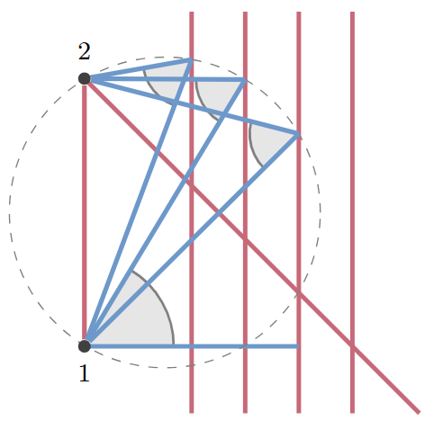

Angular Constraints on Planar Frameworks
We analyze a construction on top of the set of slopes given by an angle constraint system of incidences and angles. We provide a matricial rigidity formulation for colored graphs, an algebro-geometric reformulation, and a combinatorial characterization in a special case.